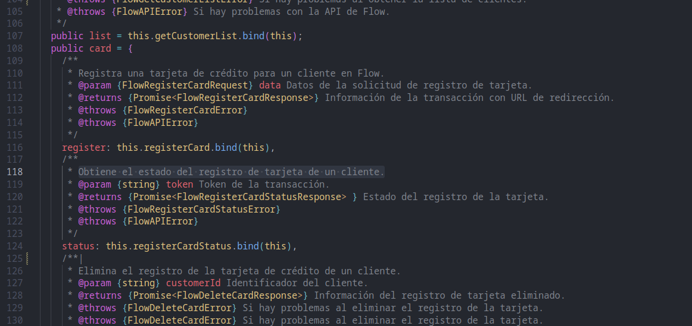

@nicotordev/flowcl-pagos
Un SDK open-source que facilita la integración de pagos con Flow.cl en aplicaciones Node.js y JavaScript.
¿Qué ofrece este SDK?
Este proyecto open-source facilita la implementación rápida y segura de pagos usando Flow.cl, simplificando el proceso con una interfaz clara y bien documentada.

Integración Sencilla
Rápido setup con documentación clara y ejemplos prácticos para empezar fácilmente.

Código Abierto
Accede al código fuente, colabora y contribuye al desarrollo de nuevas funcionalidades.

Documentación Completa
Encuentra guías detalladas, referencias claras y ejemplos para utilizar el SDK sin complicaciones.